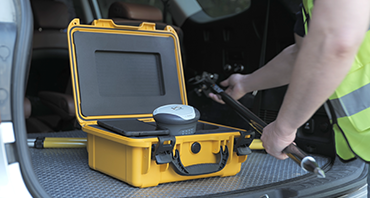
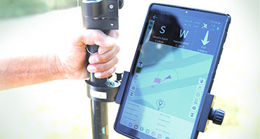

PozStar Pilot: Wireless Machine Guidance
Discover centimeter-level guidance, a cable-free setup, fast installation, and one receiver that moves between excavators.
Read newsletterExplore product technology, positioning services, international projects, and reports from the field.
Discover centimeter-level guidance, a cable-free setup, fast installation, and one receiver that moves between excavators.
Read newsletter
A practical introduction to precise point positioning and the services that support reliable GNSS work across wide areas.
Read newsletter
Watch PozStar positioning equipment in motion and see how the system performs in a real-world road test.
Read newsletter
Learn how free trade agreements and customs resources can support international purchasing and business development.
Read newsletter
See how PozStar products are gaining recognition through international publications, resellers, and market partnerships.
Read newsletter
Follow deployments and partner projects that put PozStar GNSS technology to work in demanding environments around the world.
Read newsletterAsk to receive new product stories, field reports, and company updates by email.